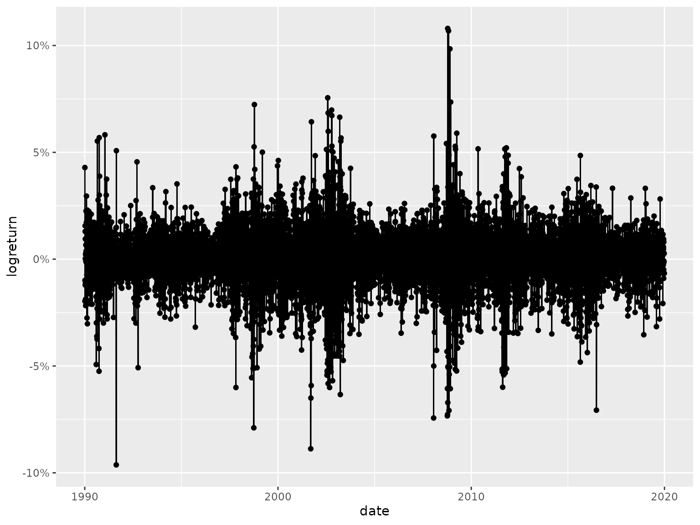

In this vignette1 we describe the workflow of the ino package for fitting a hidden Markov model (HMM) through likelihood optimization. HMMs are statistical models used to explain systems that can only be observed indirectly through a sequence of outputs, and have unobservable hidden states. They consist of two processes, a Markov process that describes the hidden states, and an observable process that describes the outputs produced by the system, where the probability of observing an output at a given time depends only on the current state. State-switching models like HMMs are commonly used in speech recognition, animal movement modeling, bioinformatics, and finance. For more technical details about HMMs and their scope of application, see, e.g., Zucchini, MacDonald, and Langrock (2016).
Application to financial data
The example data set considered throughout this vignette covers a
time series of log returns from the German stock index DAX over
30 years. The DAX closing prices are freely accessible via Yahoo Finance
and can be downloaded via the download_data() function from
the fHMM package (Oelschläger, Adam,
and Michels 2023). They can easily be transformed to log
returns using the dplyr package (Wickham et al. 2023):
library("fHMM")
library("dplyr")
dax <- download_data(symbol = "^GDAXI", from = "1990-01-01", to = "2020-01-01") %>%
as_tibble() %>%
reframe(
date = as.Date(Date, format = "%Y-%m-%d"),
logreturn = c(NA, diff(log(Close), lag = 1))
) %>%
filter(!is.na(logreturn)) %>%
print()
#> # A tibble: 7,475 × 2
#> date logreturn
#> <date> <dbl>
#> 1 1990-01-03 0.0429
#> 2 1990-01-04 -0.0197
#> 3 1990-01-05 -0.00989
#> 4 1990-01-08 0.0156
#> 5 1990-01-09 0.0130
#> 6 1990-01-10 -0.0121
#> 7 1990-01-11 0.000201
#> 8 1990-01-12 0.00947
#> 9 1990-01-15 -0.0111
#> 10 1990-01-16 -0.0188
#> # ℹ 7,465 more rowsThe time series looks as follows:
library("ggplot2")
ggplot(dax, aes(x = date, y = logreturn)) +
geom_point() +
geom_line() +
scale_x_date() +
scale_y_continuous(labels = scales::label_percent())
As the log returns are continuous and can take both negative and positive values, we consider an HMM with Gaussian state-dependent distributions — note that some applications instead use t-distributions to also model the kurtosis (Oelschläger and Adam 2021).
Likelihood optimization
We consider a 2-state (N = 2) Gaussian-HMM here to model
bearish and bullish market periods. This results in six parameters
(npar = 6) to be estimated:
- two identified parameters for the transition probability matrix (t.p.m.),
- two for the means of the state-dependent distributions,
- two for the standard deviations of the state-dependent distributions.
The likelihood for a Gaussian-HMM is given by the function
f_ll_hmm() provided by the ino package. The
argument neg = TRUE indicates that we minimize the negative
log-likelihood, and set_optimizer(optimizer_nlm()) selects
the optimizer stats::nlm() (see the introductory vignette
for more details on how to specify optimizers).
hmm_ino <- Nop$new(
f = f_ll_hmm,
npar = 6,
data = dax$logreturn,
N = 2,
neg = TRUE
)$
set_optimizer(optimizer_nlm())Random initialization
Randomly chosen starting values is a first initialization approach:
- As the first two starting values belong to the off-diagonal of the t.p.m., we draw starting values from a \(\mathcal{U}(-2,-1)\) distribution — as we use the multinomial logit link to ensure that the probabilities are between 0 and 1, a value of -1.5 correspond to probabilities of staying in state 1 or 2 of about 80%.
- For the two means, we draw two random numbers from the standard normal distribution, as the time series above indicates that the most of the returns are fairly close to zero.
- The starting values for the standard deviations are drawn from a \(\mathcal{U}(0.5,2)\) distribution (note that we exponentiate the standard deviations in the likelihood as they are constrained to be positive, and hence we log-transform the starting values).
The $optimize() method with argument
initial = sampler then performs runs = 100
optimization runs with starting values drawn from the specified
distributions:
Educated guesses
For selecting fixed starting values, we consider sets of starting values that fall in the ranges considered above. These can be considered as “educated guesses” and are likely to be close to the global optimum:
tpm_entry_1 <- tpm_entry_2 <- c(-2, -2.5)
mu_1 <- c(0, -0.05)
mu_2 <- c(0, 0.05)
sd_1 <- c(log(0.1), log(0.5))
sd_2 <- c(log(0.75), log(1))
starting_values <- asplit(expand.grid(
tpm_entry_1, tpm_entry_2, mu_1, mu_2, sd_1, sd_2),
MARGIN = 1
)This grid results in a total of 64 starting values, which can be
specified as the initial argument:
hmm_ino$optimize(initial = starting_values, label = "educated_guess")Subset initialization
Since the data set is large, containing a total of 7475 share return observations, it might be beneficial to obtain initial values by first fitting the model to a data subset. If the data subset is chosen small enough, estimation with the subset will be much faster. On the other hand, if the data subset is chosen large enough to still contain enough information, the estimates on the subset will already lie close to the estimates for the full model.
To illustrate the subset initialization strategy, we consider the
first quarter of observations, which can be extracted using the
$reduce() method with arguments how = "first"
and prop = 0.25. The starting values for the optimizations
on this subset are drawn from the sampler() function
defined above. We again use $optimize() to fit the HMM, but
now to the data subset. With $continue(), we then use the
estimates obtained from the optimization on the subset as initial values
to fit the model to the entire data set. The entire data set is restored
via $reset_argument("data").2
hmm_ino$
reduce("data", how = "first", prop = 0.25)$
optimize(initial = sampler, runs = 100, label = "subset")$
reset_argument("data")$
continue()Standardize initialization
The considered log returns range from -0.1 to 0.1. Optimization might
be facilitated by standardizing the data first. This idea can be tested
via the $standardize() method:
hmm_ino$
standardize("data")$
optimize(initial = sampler, runs = 100, label = "standardize")$
reset_argument("data")Note that we again use $reset_argument() to obtain our
actual (non-standardized) data set.
Evaluating the optimization runs
Global versus local optima
Selecting the starting values for the HMM likelihood optimization is
a well-known issue, as poor starting values may likely result in local
optima.3
We thus first evaluate the optimizations by comparing the likelihood
values at convergence, which can be displayed using the
$optima() method. Here,
-
sort_by = "value"sorts the table by function value (in decreasing order4), -
only_comparable = TRUEexcludes optimization results on the standardized or reduced data set, -
digitis = 0ignores any decimal places.
hmm_ino$optima(sort_by = "value", only_comparable = TRUE, digits = 0)
#> value frequency
#> 1 -22446 76
#> 2 -22445 40
#> 3 -21780 3
#> 4 -21372 144
#> 5 -21353 1The frequency table indicates that 76 out of 264 runs converged to the smallest (negative) log-likelihood value, which appears to be the global optimum (note that these are the negative log-likelihood values). However, in 188 runs we apparantly got stuck in local optima.
Using summary(), we now can investigate the optimum
values ("value"), the corresponding parameter vectors
("parameter"), and the optimization times
("seconds") of all runs (here, only the first ten are
shown):5
summary(hmm_ino, which_element = c("value", "parameter", "seconds")) %>%
head(n = 10)
#> value parameter seconds
#> 1 -21372.14 -2.05, -18.88, 0.00, -2.35, -4.28, -4.64 12.81
#> 2 -22445.58 -3.70, -4.52, 0.00, 0.00, -4.72, -3.86 14.84
#> 3 -21372.14 -15.59, -2.08, 5.06, 0.00, -7.44, -4.28 9.57
#> 4 -22445.58 -3.70, -4.52, 0.00, 0.00, -4.72, -3.86 20.73
#> 5 -22445.58 -4.52, -3.70, 0.00, 0.00, -3.86, -4.72 21.37
#> 6 -21352.70 -15.92, -35.48, 14.12, 0.00, -8.09, -4.28 18.44
#> 7 -22445.58 -4.52, -3.70, 0.00, 0.00, -3.86, -4.72 32.38
#> 8 -21372.14 -30.36, -3.62, -22.03, 0.00, -4.71, -4.28 24.00
#> 9 -21372.13 -2.88, -13.94, 0.00, 1.46, -4.28, -12.26 8.39
#> 10 -22445.58 -3.70, -4.52, 0.00, 0.00, -4.72, -3.86 23.36The final parameter estimates (i.e., the parameters associated with
the global optimum) can be accessed via $best_parameter()
…
hmm_ino$best_parameter()
#> [1] -3.70 -4.52 0.00 0.00 -4.72 -3.86
#> attr(,"run")
#> [1] 89
#> attr(,"optimizer")
#> [1] "stats::nlm".. and the corresponding likelihood value as:
hmm_ino$best_value()
#> [1] -22445.58
#> attr(,"run")
#> [1] 89
#> attr(,"optimizer")
#> [1] "stats::nlm"Note that the attributes "run" and
"optimizer" provide the information, in which optimization
run and with which optimizer this estimate was obtained.
We can compute the proportion of runs that lead to the apparent global optimum of -22445.58 as follows:
summary(hmm_ino, c("label", "value", "seconds"), global_optimum = "value < -22445", only_comparable = TRUE) %>%
group_by(label) %>%
summarise(proportion = mean(global_optimum, na.rm = TRUE))
#> # A tibble: 3 × 2
#> label proportion
#> <chr> <dbl>
#> 1 educated_guess 0.562
#> 2 random 0.4
#> 3 subset 0.4While for the educated guesses about 55% of the runs converge to the global optimum, the random initialization and subset initialization strategies get stuck more often in local optima. Note that the standardized initialization approach cannot be compared to the other approaches here.
Optimization time
The plot() function can be used to investigate the
optimization times across initialization strategies
(by = "label").6
plot(hmm_ino, by = "label")
Using the output provided by summary() and some data
manipulation functions provided by the package dplyr, we
can also compute summary statistics of interest, like the median
computation time or standard deviation per strategy:
summary(hmm_ino, c("label", "seconds")) %>%
group_by(label) %>%
summarise(
median_seconds = median(seconds, na.rm = TRUE),
sd_seconds = sd(seconds, na.rm = TRUE)
) %>%
arrange(median_seconds)
#> # A tibble: 4 × 3
#> label median_seconds sd_seconds
#> <chr> <dbl> <dbl>
#> 1 subset 8.37 6.16
#> 2 standardize 9.85 1.48
#> 3 educated_guess 14.8 7.28
#> 4 random 15.9 7.30The subset and the standardize approach can improve the median optimization time by a factor of about 2 in this example compared to the random initialization approach.